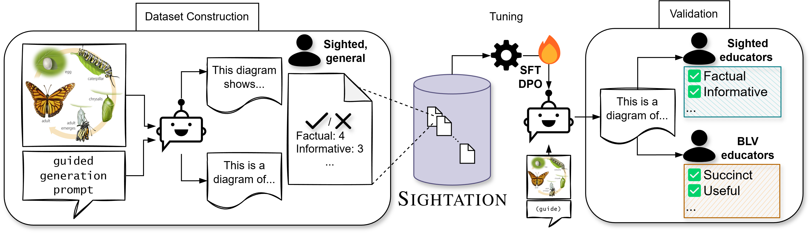
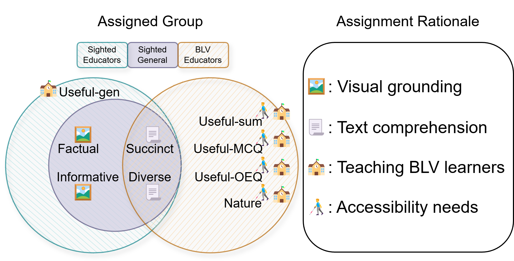
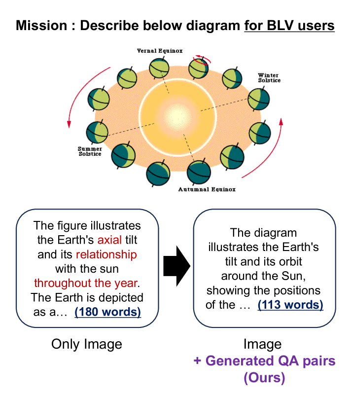
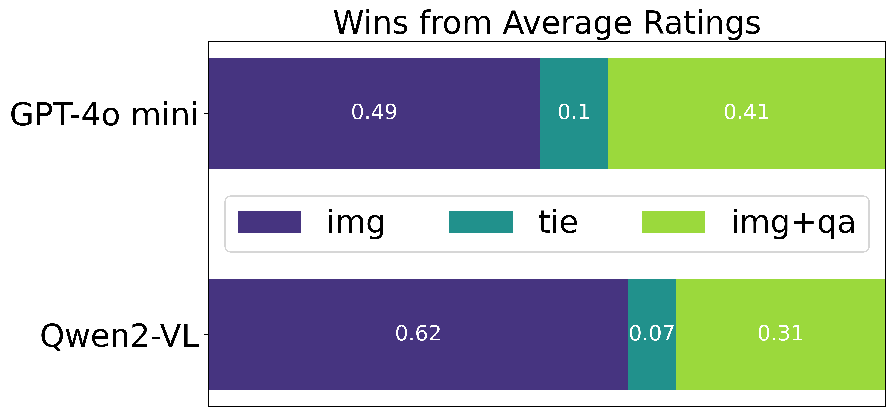
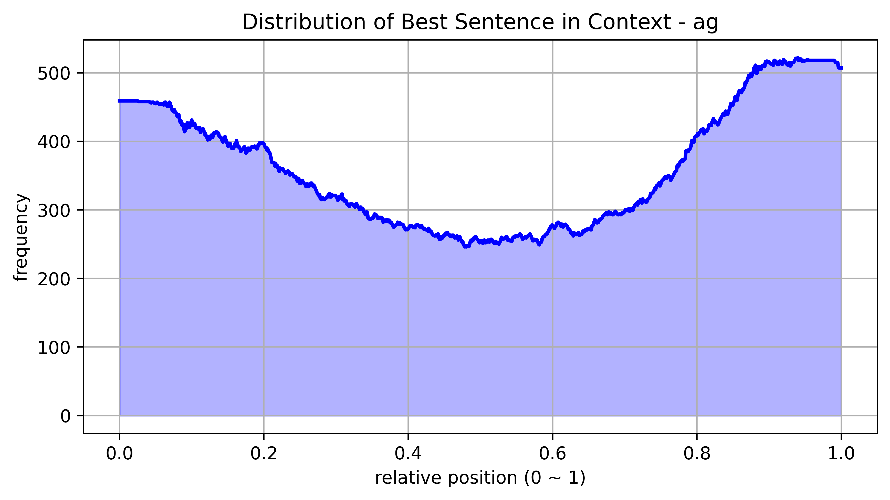
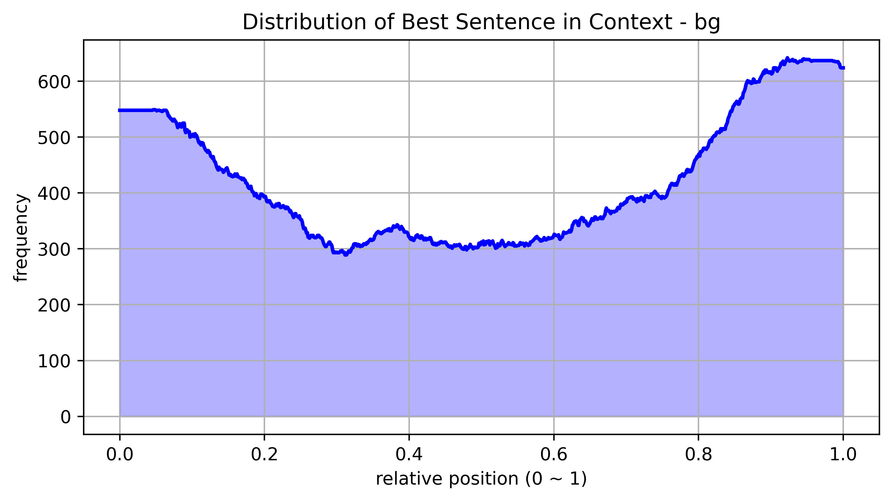
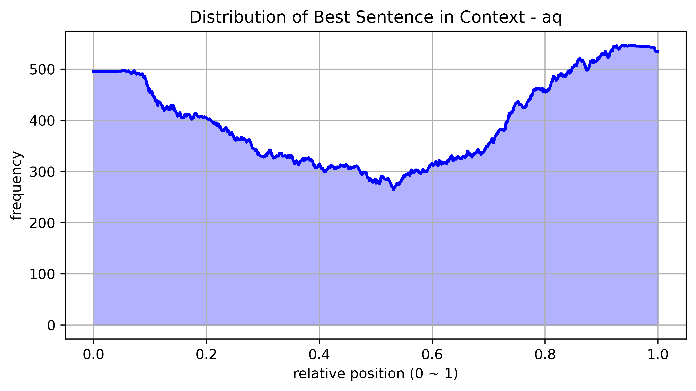
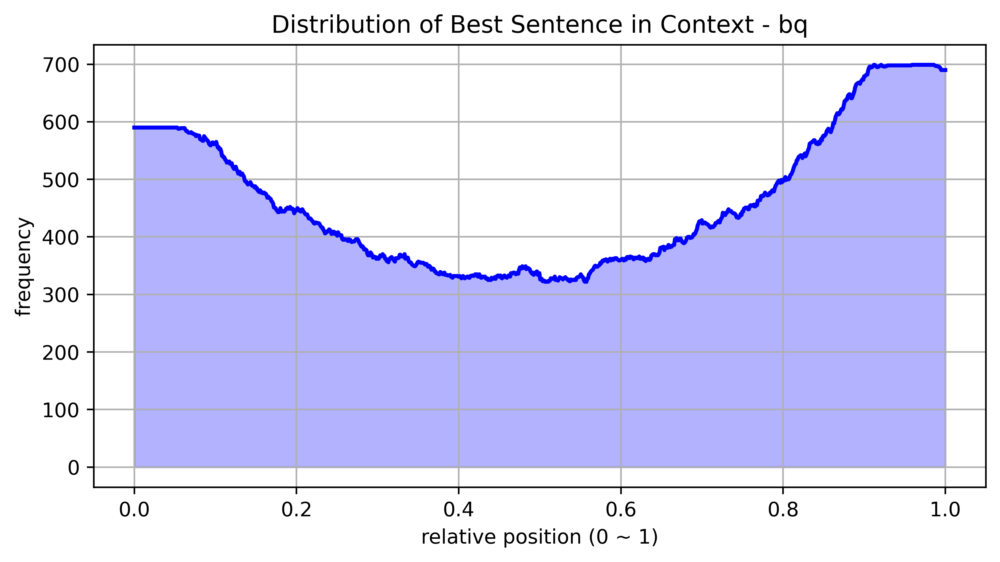
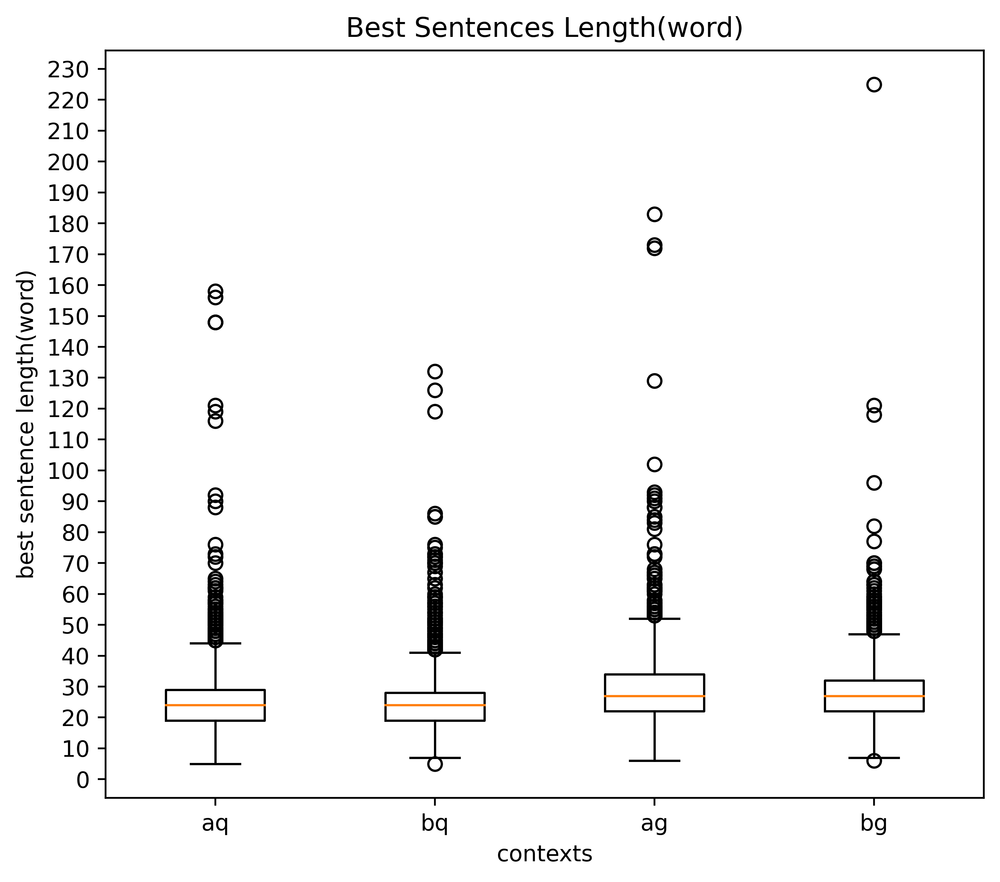

Sightation Counts: Leveraging Sighted User Feedback
in Building a BLV-aligned Dataset of Diagram Descriptions
Haemin Choi, Ki Hoon Kwak, James Thorne
KAIST AI Sungkyunkwan University Yonsei University
Work done as KAIST AI research intern
{soarhigh, eunkikim, naminan, sangryul, thorne}@kaist.ac.kr
chm1009@g.skku.edu kihoon090@yonsei.ac.kr
Abstract
Often, the needs and visual abilities differ between the annotator group and the end user group. Generating detailed diagram descriptions for blind and low-vision (BLV) users is one such challenging domain. Sighted annotators could describe visuals with ease, but existing studies have shown that direct generations by them are costly, bias-prone, and somewhat lacking by BLV standards. In this study, we ask sighted individuals to assess—rather than produce—diagram descriptions generated by vision-language models (VLM) that have been guided with latent supervision via a multi-pass inference. The sighted assessments prove effective and useful to professional educators who are themselves BLV and teach visually impaired learners. We release Sightation, a collection of diagram description datasets spanning 5k diagrams and 137k samples for completion, preference, retrieval, question answering, and reasoning training purposes and demonstrate their fine-tuning potential in various downstream tasks111Wherever possible, we use color blind safe palettes in figures and tables..
Sightation Counts: Leveraging Sighted User Feedback
in Building a BLV-aligned Dataset of Diagram Descriptions
Wan Ju Kang Eunki Kim Na Min An Sangryul Kim
Haemin Choi, Ki Hoon Kwak, James Thorne
KAIST AI Sungkyunkwan University Yonsei University
Work done as KAIST AI research intern
{soarhigh, eunkikim, naminan, sangryul, thorne}@kaist.ac.kr
chm1009@g.skku.edu kihoon090@yonsei.ac.kr
 https://hf.co/Sightation
https://hf.co/Sightation
1 Introduction
| Dataset | Average Text Length | Validated by BLV? | Applications | Dimensions Assessed |
| Sightation (Ours) -Completions -Preference -Retrieval -VQA -Reasoning | 188.3 (words) | ✓ | Completion Preference alignment Retrieval Reward modeling Question answering | Factuality Informativeness Succinctness Diversity Usefulness, in 4 finer aspects Interpretiveness Preferred Description Best Sentence |
| VisText Tang et al. (2023) | 74.6 | × | Completion | Accuracy, Descriptiveness |
| MathVista Lu et al. (2023) | 58.0 | × | VQA, Reasoning | Correctness |
| ChartGemma Masry et al. (2024b) | 37.5 | × | Completion | Informativeness, Factual Correctness, Structure |
| DiagramQG Zhang et al. (2024b) | 9.5 | × | DQA | Diversity, Object Density |
| VizWiz-VQA Gurari et al. (2018) | 8.6 | ✓ | VQA | Diversity, Answerability |
| VizWiz-LF Huh et al. (2024) | 73.2 | ✓ | VQA | Relevance, Helpfulness, Plausibility, Fluency, Correctness |
Recent research has seen rapid development in vision-language models (VLM). Seeing the world and the data within has significantly advanced machine intelligence in a variety of tasks Liu et al. (2024); Zhu et al. (2023); Yang et al. (2024); Qwen et al. (2025); Xu et al. (2024a); Li et al. (2024b), reaching a fast-growing user pool with quicker and easier access.
However, the same cannot be said of blind and low-vision (BLV) individuals. Widely adopted evaluation metrics have been shown to be biased against their preferences (Kapur and Kreiss, 2024) and benchmark studies tend to pursue a larger audience first (Li et al., 2024a, d). Publicly available reward models for generic VLMs are scarce (Zang et al., 2025) — let alone for the visually impaired. Vision-language dataset research appears divided between breadth (Tang et al., 2023; Lu et al., 2023), specificity (Masry et al., 2024b, a), and volume (Zhang et al., 2025; Lee et al., 2022).
Perhaps the classroom setting best exemplifies the circumstances BLV individuals face: textual information is combined with images (such as diagrams, graphs, and figures) to help learners fully grasp complex information (Vekiri, 2002; Cheng and Gilbert, 2009; Tippett, 2016; Gates, 2018). VLMs at the command of BLV users must therefore provide select, curated information rather than an indiscriminate narration of data.
Instilling this behavior in VLMs, however, remains challenging primarily due to dataset concerns. The unavailability of large-scale BLV-aligned datasets has prompted previous studies to crowdsource a few expert sighted annotators to generate descriptions. The limitation of this approach is twofold: i) it does not account for the preference misalignment between the BLV evaluator and the sighted generator (Lundgard and Satyanarayan, 2022); ii) it is prone to modeling the generations after the annotator rather than the task, introducing annotator bias into the dataset (Geva et al., 2019). While Kreiss et al. (2022) has illustrated the potential of sighted users as BLV preference estimators for a few specific qualities of generations, whether their findings will generalize to a dataset-scale volume of generations or with other aspects of perceived quality remains unknown.
We construct, what is to the best of our knowledge, the first dataset that addresses the union of aforementioned challenges. We prompt a VLM to generate a guide, which will be input to a second inference pass to latently supervise the second-pass behavior in favor of BLV users. Then, we further invoke the VLM to generate diagram descriptions, saving on crowdsourcing cost and reducing annotator fatigue. We distribute to sighted annotators a set of assessment tasks, substantially less demanding than a generation task, implying easier recruiting of a sufficiently large annotator population, potentially mitigating annotator bias. Finally, we design the assessment tasks such that they are finer-grained than any prior work we are aware of.
The compilation we named Sightation is the first large-scale BLV-aligned dataset that is validated by BLV professionals and can be used to train on a broad range of objectives. A few statistics to highlight our dataset performance include: preference-tuning a 2B model on our dataset to achieve an average increase in the usefulness rated by the BLV group; instruction-tuning a 2B model on our dataset to outperform a 3B model fine-tuned on chart comprehension (Masry et al., 2024b) in 8 out of 11 automatic metrics; contrastive tuning a BLIP-2(Li et al., 2023) for retrieval purposes to outperform a COCO-tuned BLIP-2 by 65%p on Precision@1.


2 Related Work
Accessibility Studies. Lundgard and Satyanarayan (2022) found that BLV and sighted reader groups differ significantly on which semantic content they consider as most useful, suggesting that access to meaningful information is strongly reader-specific. VizWiz-VQA Gurari et al. (2018) contains images and visual QA pairs produced by blind people encouraging the development of more generalized algorithms that can assist the blind. As an extended work, VizWiz-LF Huh et al. (2024) includes long-form answers from BLV people. VisText Tang et al. (2023) contains charts and captions that convey different levels of semantic content. As shown in Table 1, VizWiz-VQA and VizWiz-LF were validated by BLV users but only focus on Visual QA (VQA) applications. VisText examines the role of the level of semantic content but was not validated by BLV for dataset purposes. As a diagram description dataset validated by BLV users, Sightation explores diverse use cases, with assessments on various aspects.
Image Description Tasks and Models. Wang et al. (2024) presented the Qwen2-VL collection, which includes three open-weights models: 2B, 7B, and 72B. Qwen2-VL matches the performance of GPT-4o and Claude3.5-Sonnet Anthropic (2024) in multimodal scenarios, surpassing other open-weights VLMs at the time.
GPT-4o Hurst et al. (2024) accepts multimodal input and generates high-quality outputs including text and codes, showing powerful multimodal understanding capability. Using these VLMs, the image description task aims to generate a descriptive textual context for images of different types (e.g., photographs, illustrations, schematics, and diagrams). Flickr8K and PASCAL-50S comprise natural images, captions, and human judgmentsHodosh et al. (2013); Vedantam et al. (2015), and Polaris Wada et al. (2024) incorporated synthetic captions from image captioning models.
ChartGemma Masry et al. (2024b) contains chart images collected from specialized websites and instruction-tuning data generated from the charts. MathVista Lu et al. (2023) encompasses diverse visual contexts from natural images to diagrams or plots that require mathematical reasoning. However, Table 1 shows that these datasets have an average text length much shorter than ours, even though charts and mathematical images could be highly information-dense. Complementing the limitation, Sightation provides contexts that top in average text length to date with variants for downstream tasks.
Human Annotation Efforts. Human judgment annotations are essential in evaluating image captions, complementary to automatic metrics. Common approaches involve employing annotators to assess captions based on rating scales for specific dimensions of text quality Gehrmann et al. (2023). However, it comes with challenges, including subjectivity and consistency issues. Amidei et al. (2019) argues that the evaluation of generated text is intrinsically subjective and relies on different factors including annotator experience, motivation, knowledge, or education. A related line of research (Glockner et al., 2024; Nie et al., 2020) directly addressing this limitation advocates that generations from few-annotator pools fall short in terms of coverage of the distribution of opinions.
3 The Sightation Dataset
Sightation is a BLV-specific vision-language dataset for the educational domain. It is built upon the AI2D dataset (Kembhavi et al., 2016): we chose this for two reasons: it contains diagrams from grade school material, requiring no specialized expertise or domain knowledge in our annotator recruiting process; diagrams pose a unique challenge to VLMs in that they often require an understanding of the rendered schematics and the natural objects.
AI2D contains 5k science diagrams, with 150k annotations, spanning OCR texts and bounding box locations, as well as 15k multiple choice questions. Of these features, we take only the diagrams, to simplify Sightation-like dataset construction in the future. All notation and labeling methods used in this section are summarized in a separate Table 6 to aid comprehension.
3.1 Overview
Different annotator roles can be found in Figure 2. There are a total of 9 aspects to be assessed, and these were inspired by various related studies. In Kreiss et al. (2023), relevance and irrelevance aspects are studied to measure the image information carried in text and the inclusion of extraneous information in the text, respectively. As such, we chose to examine Informativeness and Factuality dimensions. These both require reliable visual grounding so were assigned to the sighted accordingly. We also opted for some measures to be assessed by all groups. Since brevity (Lundgard and Satyanarayan, 2022) and diverse opinion coverage (Glockner et al., 2024; Nie et al., 2020) have been pointed out as contributors to perceived quality, we chose to incorporate them as the Succinctness and the Diversity aspects, both of which are assessable with text comprehension alone. Following Tang et al. (2023), we split the use cases for the usefulness measure along typical vision-language comprehension tasks common in the classroom: Useful-Sum (summarization), Useful-MCQ (multiple-choice questions), and Useful-OEQ (open-ended questions). These were assigned to the BLV educators, adept at teaching and knowledgeable in accessibility needs. A general usefulness measure Useful-Gen was assigned to the sighted educators to probe their estimate of BLV needs. Finally, a categorical variable, Nature, was assigned to the BLV educators to ask for their opinion on how interpretive the text appears.
These different subsets were assigned to pursue a synergistic interplay between varying visual abilities, teaching experience, and accessibility requirements. The sighted general group, shown on the left in Figure 1 ensures that the diagram content is well-conveyed in the description. Sighted educators, shown on the top right of Figure 1 validate the general group’s assessment whilst also rating the general usefulness of the description to BLV users. Finally, the text-based assessment by BLV educators, shown on the bottom right in the same figure, gauges the alignment of Sightation-tuned descriptions with BLV preferences. A more detailed description of the annotation tasks is in Section 3.3 for the sighted general group and in Section 4.2.1 for the sighted and BLV.
3.2 Guided Generation with Latent Supervision
Previous work (Lundgard and Satyanarayan, 2022) has shown that crowdsourced data visualization descriptions written by sighted crowdworkers were not equally useful to the BLV groups as they were to the sighted, in terms of describing low-level numerical elements or high-level insights such as subjective commentary. Building on this, we hypothesized that the key to generating a description that is useful to BLV individuals lies not only in what is seen but also in how the perceived information is articulated. We hypothesized that introducing auxiliary data such as plausible question-answer pairs, would have a good effect as they assist the description generator with understanding which parts are critical and which are less so.
In implementing this idea, we incorporated a two-pass guided generation process. The first inference pass is to create the guide, which is a VLM-generated set of question-answer pairs in response to an input diagram. We carefully examine the quality of the question and answer pairs we have generated and, in the Appendix A.1, provide a more in-depth analysis of how these pairs differ from those originally included in the AI2D dataset. Then, the second pass generates the diagram description in response to the input diagram and the guided generation prompt, as shown on the leftmost part of Figure 1.
We applied this generation process with two models: GPT-4o mini and Qwen2-VL 72B model, producing four descriptions for each of the 5k diagrams in the AI2D dataset. The working dataset thus contains 20k descriptions.
3.3 Annotation Tasks
1k images were randomly sampled from the working dataset. They were then paired with their respective descriptions generated by GPT-4o mini ( and ) and descriptions generated by Qwen2-VL ( and ) were distributed to the 30 sighted annotators, to complete three tasks: i) preference choice, ii) quality rating, and iii) best sentence choice. The 1k tuples were partitioned into 10, so that 3 participants perform the annotation on a shared total of 100 tuples.
First, annotators were asked to select pairwise preferred descriptions: one from the GPT pair and the other from the Qwen pair. Second, for all four diagram descriptions, they were asked to rate the description quality across the 4 aspects assigned to them, as in Figure 2, on a 5-point Likert scale.
Lastly, they were asked to pick the best-contributing sentence from each of the four diagram descriptions. Sample screenshots of the annotation interface, along with the annotation guidelines, are provided in Appendix I.
The total number of annotations is 11,804, spanning 998 diagrams and 3,992 descriptions. Further statistics and post-processing steps are found in Appendix C.
3.4 Dataset Construction
In this section, we describe how the annotated tuples are processed for various downstream tasks.
3.4.1 Chat Completion
SightationCompletions contains instruction-response pairs from two sets: i) all the 4k human-annotated descriptions over 1k images, with the base instruction in Appendix G and ii) the top 25% highly rated descriptions for each of the 4 aspects annotated. For the latter subset, we augment the base instruction to pair responses that were of high quality in some aspect. We append an aspect-specific suffix outlining the desired quality according to our annotation guidelines in Appendix I. For instance, the aspect suffix for the factuality dimension is: “When generating the diagram description, pay close attention to making it factual. A highly factual description delivers only the facts that are grounded in the diagram.”
With the former set consisting of 4k (diagram, base prompt, description) samples and the latter set consisting of 1k (diagram, augmented prompt, description) samples per aspect, our completions dataset totals 8k samples.
3.4.2 Preference Alignment
SightationPreference also proceeds from the 4k diagram-description pairs, consisting of 4 descriptions for every image. From these 4, we take the 6 possible pairwise combinations and label “chosen” and “rejected” to each contender in the pairwise comparisons as follows.
In-model Contenders
Within each of the 2 same-model comparisons, (e.g., versus ) we directly take the annotation to assign “chosen” and “rejected”. This assignment results in 2 × 1k = 2k chosen-rejected preference pairs.
Cross-model Contenders
Within each of the 4 cross-model comparisons, (e.g., versus ), we averaged the rating scores per contender and assigned222Ties are technically possible, but the collected annotations did not contain any. “chosen” to the ratings winner. This assignment results in 4 × 1k = 4k preference pairs.
Synthetic Contenders
Additionally, we synthesized an inferior (“rejected”) variant of a description by removing its best sentence. To account for the reduced length, we remove a random non-best sentence from the original description and label this variant “chosen”. This assignment results in 4 × 1k = 4k preference pairs per annotator. A maximum of three annotators evaluated the same sample, so the preference pairs total 12k. After deduplicating (e.g., annotators selecting the same sentence as the best sentence), we have 10k preference pairs.
Putting together the in-model (2k), cross-model (4k), and synthetic (10k) contenders and their respective labels, SightationPreference spans 16k pairs.
3.4.3 Retrieval
Each row in SightationRetrieval contains an image as a retrieval query, accompanied by the top 1, top 5, and top 10 descriptions as the positives, as well as 10 hard negatives. This set contains 1k rows, with a potential well beyond that number. For instance, more than 63 million unique combinations can be derived utilizing 5 random samples from the 10 positives and 5 random samples from the 10 negatives. Further details can be found in Appendix D.
4 Performance Analysis
We designed a series of experiments to measure the performance of Sightation as a dataset. First, we fine-tuned various models on our dataset. Then, we asked sighted and BLV teachers at schools for the blind to evaluate the generated texts. Additionally, we employ VLM judges and a number of well-known classic metrics to evaluate the descriptions. We report the main findings on the extent and breadth of performance enhancement our dataset can cultivate.
4.1 Fine Tuning
We chose to experiment with the Qwen2-VL series (Wang et al., 2024) considering its size variety, state-of-the-art performance at the time of writing, as well as whether the largest variant (72B) could fit on our compute cluster in its default precision, bf16, unquantized. We fine-tuned the 2B and 7B models and performed comparative analyses. Finer details on the tuning configuration are found in Appendix H.
4.1.1 On SightationCompletions
We conducted supervised fine tuning (SFT) on our completions dataset. The 2B model underwent full fine tuning, whereas the 7B model underwent parameter-efficient fine tuning (PEFT).
4.1.2 On SightationPreference
For preference alignment tuning, we chose to perform Direct Preference Optimization (DPO, Rafailov et al. (2024)). Since reward models trained on generic data may not accurately represent BLV preferences, we opted for DPO, a widely used algorithm free of reward models. Before the actual DPO training, as is common in practice, we first subjected the 2B and 7B models to SFT. However, we recognized that sharing the same set of diagrams across the SFT and DPO stages could pose higher overfitting risks. With that in mind, instead of using SightationCompletions for SFT, we randomly sampled 1k diagrams along with their 4 descriptions from the remaining pool of generated descriptions (i.e., the ones not in SightationCompletions) and used these to compile 4k completion samples. Afterwards, DPO was run on SightationPreference. At both the SFT and DPO stages, the 2B model was fully fine-tuned, and the 7B model was trained with PEFT.
4.1.3 On SightationRetrieval
We performed contrastive training to fine-tune BLIP-2 (Li et al., 2023) for its appeal in image-text matching. To save compute, we trained only parts of the model and with just the top 1 positive and a randomly chosen negative. The training was carried out with InfoNCE loss (Oord et al., 2018), a widely used choice for contrastive objectives.
4.2 Evaluation Setup
4.2.1 By Teaching Professionals
We recruited 17 specialized educators who teach BLV learners at schools for the visually impaired. 8 of them are themselves blind or have low vision; remaining 9 are sighted. We refer to these groups as the BLV educator group and the sighted educator group, respectively. Their demographics are reported in Tables 17 and 18

BLV Educators
Each BLV educator was given 40 diagrams, each with two competing descriptions. They were asked to rate text-based qualities. They were asked to perform a quantitative assessment on the aspect set pictured in Figure 2.
Following Tang et al. (2023); Lundgard and Satyanarayan (2022), we chose to investigate the usefulness of the diagram descriptions, but in three finer manifestations. Specifically, we asked the BLV educators to assess how useful the description is as a textual aid providing i) a summary of the diagram content, ii) clues that would be helpful when solving short-answer multiple-choice questions about the diagram, and iii) clues that would be helpful when answering long-answer open-ended questions about the diagram.
Sighted Educators
Each sighted educator was given 40 diagrams, each with two competing descriptions with randomized order of presentation. They were then asked to evaluate the descriptions according to the guidelines for the sighted educator group, found in Appendix I. Their aspect set, also shown in Fig. 2, includes a usefulness estimate to BLV users.
4.2.2 By Automatic Metrics
We perform a VLM-as-a-Judge (Dubois et al. (2023),Zheng et al. (2023)) evaluation with QVQ-72B-Preview, where we instruct the VLM to take the Image, , and triplet as input and produce a JSON-formatted evaluation with the same aspects as with the human annotation.
As for classic metrics, we collect widely recognized reference-free metrics since the AI2D dataset does not contain references: CLIP score (Hessel et al., 2021), SigLIP score (Zhai et al., 2023), BLIP-2 Retrieval score (Li et al., 2023), Self-BLEU (based on BLEU (Papineni et al., 2002)), PAC score (Sarto et al., 2023), and LongCLIP-B/L (Zhang et al., 2024a). For the retrieval task, we chose to measure recall@ and precision@ for , as do numerous retrieval studies.
5 Results
We report the evaluation results by the BLV educator group, the sighted educator group, VLM judges, and classic metrics. For each group, we discuss the effectiveness of the combined recipe, then with the guided generation ablated, and with the tuning step ablated. Here, we focus on the evaluation by BLV; sighted educator and VLM-as-a-Judge evaluation, as well as classic metric results are found in Appendix E.
5.1 Evaluation by BLV Educators
Here, we conduct an analysis of effect size, an intuitive choice for aggregate analysis on different sample sets rated by different evaluators. Figure 3 shows the effect size computed from BLV educators’ assessment. The radial axis corresponds to the mean ratings on each of the two sets of samples under comparison, normalized by their pooled standard deviation (). Naturally, the radial axis is in units of the pooled standard deviation.
The first radar chart in Figure 3 shows the result of comparing and . The latter was rated more than higher in interpretiveness (Nature); better in diversity and usefulness for open-ended questions; units more useful as a summary.
In the middle of the same figure is shown the ablated result of fine tuning, with the guided generation turned on for both sets: a comparison between and . All 6 aspects were judged in favor of the latter, with as large as difference in interpretiveness and diversity and in usefulness for open-ended questions.
On the right is shown the effect of the guided generation on a SightationPreference-tuned 2B model: a comparison between and . Guided generation yields significant enhancement for the DPO-tuned case, with higher in usefulness for multiple choice questions, followed by approximately improvement in usefulness for open-ended questions, an overall improvement in every aspect down to succinctness, with . However, as will be discussed with Table 4, this effect by the guided generation is achieved only after the model is fine-tuned on our dataset, implying that a good alignment is a pre-requisite for attempting to benefit from test-time prompting.
| Combined Effect Size | ||
| Aspect | 2B | 7B |
| Succinct | -0.09 | 1.69 |
| Diverse | 0.90 | 0.46 |
| Useful-Sum | 0.39 | 0.53 |
| Useful-MCQ | -0.18 | 0.20 |
| Useful-OEQ | 0.76 | 0.00 |
| Average | 0.36 | 0.58 |
| Nature | 1.08 | -2.38 |
| Tuning Effect Size | ||||
| Aspect | 2B | 2B+GG | 7B | 7B+GG |
| Succinct | 0.06 | 0.08 | 0.37 | -0.11 |
| Diverse | 0.87 | 1.08 | -0.06 | 0.00 |
| Useful-Sum | 0.20 | 0.55 | 0.14 | 0.36 |
| Useful-MCQ | 0.29 | 0.00 | -0.54 | 0.00 |
| Useful-OEQ | 1.01 | 0.90 | -0.74 | -0.19 |
| Average | 0.49 | 0.52 | -0.17 | 0.01 |
| Nature | 1.49 | 1.06 | -3.14 | -0.31 |
| Guided Generation Effect Size | |||
| Aspect | GPT | 2B Base | 2B DPO |
| Succinct | 0.18 | -0.17 | 0.17 |
| Diverse | -0.13 | -0.13 | 0.47 |
| Useful-Sum | 0.48 | -0.17 | 0.57 |
| Useful-MCQ | 0.13 | -0.20 | 0.92 |
| Useful-OEQ | 0.76 | -0.07 | 0.77 |
| Average | 0.28 | -0.15 | 0.58 |
| Nature | 0.33 | 0.08 | 3.17 |
6 Discussion
Tables 4, 4, and 4 show Cohen’s , which is the size of the effect of the treatment in the respective table. Ratings on Nature are not included in the average computation since it is a categorical variable; i.e., a low Nature rating simply means the description was perceived to be more straight facts-oriented than commentary-oriented, and not necessarily of a lower quality.
Combined Effect Size
Table 4 shows the effect size of fine tuning on Sightation and applying the guided generation prompt at test time. With the combined recipe applied, the 2B model achieves an average of units of improvement, while the 7B model, units. Intriguing observations can be made on succinctness. The 2B model exhibited the smallest effect size in this aspect, whereas the 7B model achieved the highest enhancement. This suggests that the combined recipe applied on the smaller model had negligible effect in making its descriptions more succinct. In fact, the combined recipe enhanced Nature by a large effect (), implying that, with smaller models, the prime importance of the combined recipe lies in shaping the descriptions to be far more interpretive. The opposite can be said of the 7B model: the combined recipe greatly () enhances its succinctness, whilst shaping its descriptions far less interpretive () and straight facts-oriented instead. This is in line with 3 separate comments by our BLV educators (B1, B2, and B5) who have, unknowingly of each other’s interview responses, stressed the importance of succinctness: “The description must deliver all visual items in an accurate and consistent manner, with not too long a text and including the key elements.”
Tuning Effect Size
Table 4 shows the effect size of fine tuning on Sightation. For instance, with guided generation absent, the 2B model still reaps units of improvement in the diversity aspect of its descriptions. The improvement margin is even amplified further by applying guided generation on the tuned model, except for usefulness in solving questions. The table shares the observation made on the succinctness-nature relationship conveyed in Table 4, albeit to a lesser extent on the 7B model with guided generation. This set, whose ratings are on the rightmost column of Table 4, showed meaningful effect size only in usefulness as a summary and nature. This implies that larger models are already somewhat capable of capitalizing on the guided generation prompt at test time and carry less reliance on the fine tuning process.
Guided Generation Effect Size
Table 4 shows that the guided generation yields benefits even to GPT, possibly indicative of the under-representation of BLV accessibility needs and preferences in the pre-training data. It is important to note that, for the 2B model, the best effect of guided generation is achieved only after the model is tuned on our dataset, again highlighting the BLV alignment capabilities of our dataset, that cannot be mimicked by test-time prompt engineering alone.
7 Conclusion
We release Sightation, a suite of the datasets showcasing these key characteristics: i) produced with BLV-oriented guided generation of VLMs instead of crowdworkers, who pose annotator bias concerns and are bottlenecked by cost and fatigue, ii) validated by specialized teaching professionals at schools for the blind, and iii) demonstrated across a wide range of use cases, making the most of the invaluable feedback from BLV and sighted groups and inviting continued active endeavor towards accessible language and education.
Limitations
Challenges in Supervision and Capturing Details in Diagram
One challenge of our current approach is that the supervision signal predominantly relies on the QA format, leaving the exploration of alternative supervision substances relatively underdeveloped. In addition, our pipeline does not fully leverage advanced segmentation techniques, which could be crucial for accurately capturing and interpreting complex diagrammatic details. These constraints may affect the system’s performance with diagrams that feature intricate or non-standard layouts. This aspect will be revisited in future research, as it holds the potential to achieve further advancements beyond the performance improvements demonstrated with our current dataset version.
Ethics Statement
Potential Risks in Dataset Generation
We acknowledge that during the process of creating our dataset, we utilized various LLMs, and there is a potential ethical risk that unintended biases or unexpected outcomes may have been inadvertently included. However, once the human labels are applied, the post-processed information minimizes this risk.
AI Assistant
Also, we hereby acknowledge that we have received assistance with grammar and word choice from LLMs such as chatGPT-4o in preparing this paper. However, all text is ultimately composed in the authors’ own words and was originally formulated by them.
References
- Amidei et al. (2019) Jacopo Amidei, Paul Piwek, and Alistair Willis. 2019. Agreement is overrated: A plea for correlation to assess human evaluation reliability. In INLG 2019, Tokyo, Japan. ACL.
- Anthropic (2024) AI Anthropic. 2024. The claude 3 model family: Opus, sonnet, haiku. Claude-3 Model Card, 1.
- Bhushan and Lee (2022) Shreyanshu Bhushan and Minho Lee. 2022. Block diagram-to-text: Understanding block diagram images by generating natural language descriptors. In Findings of AACL 2022, Online only. ACL.
- Chen et al. (2023) Lichang Chen, Shiyang Li, Jun Yan, Hai Wang, Kalpa Gunaratna, Vikas Yadav, Zheng Tang, Vijay Srinivasan, Tianyi Zhou, Heng Huang, et al. 2023. Alpagasus: Training a better alpaca with fewer data. arXiv preprint arXiv:2307.08701.
- Cheng and Gilbert (2009) Maurice Cheng and John K Gilbert. 2009. Towards a better utilization of diagrams in research into the use of representative levels in chemical education. In Multiple representations in chemical education, pages 55–73. Springer.
- Dubois et al. (2023) Yann Dubois, Chen Xuechen Li, Rohan Taori, Tianyi Zhang, Ishaan Gulrajani, Jimmy Ba, Carlos Guestrin, Percy S Liang, and Tatsunori B Hashimoto. 2023. Alpacafarm: A simulation framework for methods that learn from human feedback. Advances in Neural Information Processing Systems, 36:30039–30069.
- Gates (2018) Peter Gates. 2018. The importance of diagrams, graphics and other visual representations in stem teaching. STEM education in the junior secondary: The state of play, pages 169–196.
- Gehrmann et al. (2023) Sebastian Gehrmann, Elizabeth Clark, and Thibault Sellam. 2023. Repairing the cracked foundation: A survey of obstacles in evaluation practices for generated text. Journal of Artificial Intelligence Research, 77:103–166.
- Geva et al. (2019) Mor Geva, Yoav Goldberg, and Jonathan Berant. 2019. Are we modeling the task or the annotator? an investigation of annotator bias in natural language understanding datasets. arXiv preprint arXiv:1908.07898.
- Glockner et al. (2024) Max Glockner, Ieva Staliūnaitė, James Thorne, Gisela Vallejo, Andreas Vlachos, and Iryna Gurevych. 2024. AmbiFC: Fact-checking ambiguous claims with evidence. Transactions of the Association for Computational Linguistics, 12.
- Gurari et al. (2018) Danna Gurari, Qing Li, Abigale J Stangl, Anhong Guo, Chi Lin, Kristen Grauman, Jiebo Luo, and Jeffrey P Bigham. 2018. Vizwiz grand challenge: Answering visual questions from blind people. In Proceedings of the IEEE conference on computer vision and pattern recognition, pages 3608–3617.
- Hessel et al. (2021) Jack Hessel, Ari Holtzman, Maxwell Forbes, Ronan Le Bras, and Yejin Choi. 2021. Clipscore: A reference-free evaluation metric for image captioning. arXiv preprint arXiv:2104.08718.
- Hodosh et al. (2013) Micah Hodosh, Peter Young, and Julia Hockenmaier. 2013. Framing image description as a ranking task: Data, models and evaluation metrics. Journal of Artificial Intelligence Research, 47:853–899.
- Huh et al. (2024) Mina Huh, Fangyuan Xu, Yi-Hao Peng, Chongyan Chen, Hansika Murugu, Danna Gurari, Eunsol Choi, and Amy Pavel. 2024. Long-form answers to visual questions from blind and low vision people. arXiv preprint arXiv:2408.06303.
- Hurst et al. (2024) Aaron Hurst, Adam Lerer, Adam P Goucher, Adam Perelman, Aditya Ramesh, Aidan Clark, AJ Ostrow, Akila Welihinda, Alan Hayes, Alec Radford, et al. 2024. Gpt-4o system card. arXiv preprint arXiv:2410.21276.
- Kapur and Kreiss (2024) Rhea Kapur and Elisa Kreiss. 2024. Reference-based metrics are biased against blind and low-vision users’ image description preferences. In NLP4PI 2024, Miami, Florida, USA. ACL.
- Kembhavi et al. (2016) Aniruddha Kembhavi, Mike Salvato, Eric Kolve, Minjoon Seo, Hannaneh Hajishirzi, and Ali Farhadi. 2016. A diagram is worth a dozen images. In Computer Vision–ECCV 2016: 14th European Conference, Amsterdam, The Netherlands, October 11–14, 2016, Proceedings, Part IV 14, pages 235–251. Springer.
- Kreiss et al. (2022) Elisa Kreiss, Cynthia Bennett, Shayan Hooshmand, Eric Zelikman, Meredith Ringel Morris, and Christopher Potts. 2022. Context matters for image descriptions for accessibility: Challenges for referenceless evaluation metrics. arXiv preprint arXiv:2205.10646.
- Kreiss et al. (2023) Elisa Kreiss, Eric Zelikman, Christopher Potts, and Nick Haber. 2023. Contextref: Evaluating referenceless metrics for image description generation. arXiv preprint arXiv:2309.11710.
- Lee et al. (2022) Dong Won Lee, Chaitanya Ahuja, Paul Pu Liang, Sanika Natu, and Louis-Philippe Morency. 2022. Multimodal lecture presentations dataset: Understanding multimodality in educational slides. arXiv preprint arXiv:2208.08080.
- Li et al. (2024a) Bohao Li, Yuying Ge, Yixiao Ge, Guangzhi Wang, Rui Wang, Ruimao Zhang, and Ying Shan. 2024a. Seed-bench: Benchmarking multimodal large language models. In Proceedings of the IEEE/CVF Conference on Computer Vision and Pattern Recognition, pages 13299–13308.
- Li et al. (2023) Junnan Li, Dongxu Li, Silvio Savarese, and Steven Hoi. 2023. Blip-2: Bootstrapping language-image pre-training with frozen image encoders and large language models. In International conference on machine learning, pages 19730–19742. PMLR.
- Li et al. (2024b) Lei Li, Yuanxin Liu, Linli Yao, Peiyuan Zhang, Chenxin An, Lean Wang, Xu Sun, Lingpeng Kong, and Qi Liu. 2024b. Temporal reasoning transfer from text to video. arXiv preprint arXiv:2410.06166.
- Li et al. (2024c) Lei Li, Yuqi Wang, Runxin Xu, Peiyi Wang, Xiachong Feng, Lingpeng Kong, and Qi Liu. 2024c. Multimodal arxiv: A dataset for improving scientific comprehension of large vision-language models. arXiv preprint arXiv:2403.00231.
- Li et al. (2024d) Lei Li, Yuancheng Wei, Zhihui Xie, Xuqing Yang, Yifan Song, Peiyi Wang, Chenxin An, Tianyu Liu, Sujian Li, Bill Yuchen Lin, et al. 2024d. Vlrewardbench: A challenging benchmark for vision-language generative reward models. arXiv preprint arXiv:2411.17451.
- Liu et al. (2024) Haotian Liu, Chunyuan Li, Yuheng Li, and Yong Jae Lee. 2024. Improved baselines with visual instruction tuning. In Proceedings of the IEEE/CVF Conference on Computer Vision and Pattern Recognition (CVPR), pages 26296–26306.
- Lu et al. (2023) Pan Lu, Hritik Bansal, Tony Xia, Jiacheng Liu, Chunyuan Li, Hannaneh Hajishirzi, Hao Cheng, Kai-Wei Chang, Michel Galley, and Jianfeng Gao. 2023. Mathvista: Evaluating mathematical reasoning of foundation models in visual contexts. arXiv preprint arXiv:2310.02255.
- Lu et al. (2022) Pan Lu, Swaroop Mishra, Tony Xia, Liang Qiu, Kai-Wei Chang, Song-Chun Zhu, Oyvind Tafjord, Peter Clark, and Ashwin Kalyan. 2022. Learn to explain: Multimodal reasoning via thought chains for science question answering. In The 36th Conference on Neural Information Processing Systems (NeurIPS).
- Lundgard and Satyanarayan (2022) Alan Lundgard and Arvind Satyanarayan. 2022. Accessible visualization via natural language descriptions: A four-level model of semantic content. IEEE Transactions on Visualization and Computer Graphics, 28(1):1073–1083.
- Masry et al. (2022) Ahmed Masry, Xuan Long Do, Jia Qing Tan, Shafiq Joty, and Enamul Hoque. 2022. ChartQA: A benchmark for question answering about charts with visual and logical reasoning. In Findings of ACL 2022, Dublin, Ireland. ACL.
- Masry et al. (2024a) Ahmed Masry, Mehrad Shahmohammadi, Md Rizwan Parvez, Enamul Hoque, and Shafiq Joty. 2024a. ChartInstruct: Instruction tuning for chart comprehension and reasoning. In Findings of ACL 2024, Bangkok, Thailand. ACL.
- Masry et al. (2024b) Ahmed Masry, Megh Thakkar, Aayush Bajaj, Aaryaman Kartha, Enamul Hoque, and Shafiq Joty. 2024b. Chartgemma: Visual instruction-tuning for chart reasoning in the wild. arXiv preprint arXiv:2407.04172.
- Nie et al. (2020) Yixin Nie, Xiang Zhou, and Mohit Bansal. 2020. What can we learn from collective human opinions on natural language inference data? arXiv preprint arXiv:2010.03532.
- Oord et al. (2018) Aaron van den Oord, Yazhe Li, and Oriol Vinyals. 2018. Representation learning with contrastive predictive coding. arXiv preprint arXiv:1807.03748.
- Papineni et al. (2002) Kishore Papineni, Salim Roukos, Todd Ward, and Wei-Jing Zhu. 2002. Bleu: a method for automatic evaluation of machine translation. In Proceedings of the 40th annual meeting of the Association for Computational Linguistics, pages 311–318.
- Qwen et al. (2025) Qwen, :, An Yang, Baosong Yang, Beichen Zhang, Binyuan Hui, Bo Zheng, Bowen Yu, Chengyuan Li, Dayiheng Liu, Fei Huang, Haoran Wei, Huan Lin, Jian Yang, Jianhong Tu, Jianwei Zhang, Jianxin Yang, Jiaxi Yang, Jingren Zhou, Junyang Lin, Kai Dang, Keming Lu, Keqin Bao, Kexin Yang, Le Yu, Mei Li, Mingfeng Xue, Pei Zhang, Qin Zhu, Rui Men, Runji Lin, Tianhao Li, Tianyi Tang, Tingyu Xia, Xingzhang Ren, Xuancheng Ren, Yang Fan, Yang Su, Yichang Zhang, Yu Wan, Yuqiong Liu, Zeyu Cui, Zhenru Zhang, and Zihan Qiu. 2025. Qwen2.5 technical report. Preprint, arXiv:2412.15115.
- Rafailov et al. (2024) Rafael Rafailov, Archit Sharma, Eric Mitchell, Christopher D Manning, Stefano Ermon, and Chelsea Finn. 2024. Direct preference optimization: Your language model is secretly a reward model. Advances in Neural Information Processing Systems, 36.
- Sarto et al. (2023) Sara Sarto, Manuele Barraco, Marcella Cornia, Lorenzo Baraldi, and Rita Cucchiara. 2023. Positive-augmented contrastive learning for image and video captioning evaluation. In Proceedings of the IEEE/CVF conference on computer vision and pattern recognition, pages 6914–6924.
- Song et al. (2020) Kaitao Song, Xu Tan, Tao Qin, Jianfeng Lu, and Tie-Yan Liu. 2020. Mpnet: Masked and permuted pre-training for language understanding. Advances in neural information processing systems, 33:16857–16867.
- Tang et al. (2023) Benny J Tang, Angie Boggust, and Arvind Satyanarayan. 2023. Vistext: A benchmark for semantically rich chart captioning. arXiv preprint arXiv:2307.05356.
- Tippett (2016) Christine D Tippett. 2016. What recent research on diagrams suggests about learning with rather than learning from visual representations in science. International Journal of Science Education, 38(5):725–746.
- Vedantam et al. (2015) Ramakrishna Vedantam, C Lawrence Zitnick, and Devi Parikh. 2015. Cider: Consensus-based image description evaluation. In Proceedings of the IEEE conference on computer vision and pattern recognition, pages 4566–4575.
- Vekiri (2002) Ioanna Vekiri. 2002. What is the value of graphical displays in learning? Educational psychology review, 14:261–312.
- Wada et al. (2024) Yuiga Wada, Kanta Kaneda, Daichi Saito, and Komei Sugiura. 2024. Polos: Multimodal metric learning from human feedback for image captioning. In Proceedings of the IEEE/CVF Conference on Computer Vision and Pattern Recognition, pages 13559–13568.
- Wang et al. (2024) Peng Wang, Shuai Bai, Sinan Tan, Shijie Wang, Zhihao Fan, Jinze Bai, Keqin Chen, Xuejing Liu, Jialin Wang, Wenbin Ge, et al. 2024. Qwen2-vl: Enhancing vision-language model’s perception of the world at any resolution. arXiv preprint arXiv:2409.12191.
- Xu et al. (2024a) Peng Xu, Wenqi Shao, Kaipeng Zhang, Peng Gao, Shuo Liu, Meng Lei, Fanqing Meng, Siyuan Huang, Yu Qiao, and Ping Luo. 2024a. Lvlm-ehub: A comprehensive evaluation benchmark for large vision-language models. IEEE Transactions on Pattern Analysis and Machine Intelligence.
- Xu et al. (2024b) Zhangchen Xu, Fengqing Jiang, Luyao Niu, Yuntian Deng, Radha Poovendran, Yejin Choi, and Bill Yuchen Lin. 2024b. Magpie: Alignment data synthesis from scratch by prompting aligned llms with nothing. arXiv preprint arXiv:2406.08464.
- Yang et al. (2024) An Yang, Baosong Yang, Binyuan Hui, Bo Zheng, Bowen Yu, Chang Zhou, Chengpeng Li, Chengyuan Li, Dayiheng Liu, Fei Huang, et al. 2024. Qwen2 technical report. arXiv preprint arXiv:2407.10671.
- Yue et al. (2024) Xiang Yue, Yuansheng Ni, Kai Zhang, Tianyu Zheng, Ruoqi Liu, Ge Zhang, Samuel Stevens, Dongfu Jiang, Weiming Ren, Yuxuan Sun, Cong Wei, Botao Yu, Ruibin Yuan, Renliang Sun, Ming Yin, Boyuan Zheng, Zhenzhu Yang, Yibo Liu, Wenhao Huang, Huan Sun, Yu Su, and Wenhu Chen. 2024. Mmmu: A massive multi-discipline multimodal understanding and reasoning benchmark for expert agi. In Proceedings of the IEEE/CVF Conference on Computer Vision and Pattern Recognition (CVPR), pages 9556–9567.
- Zang et al. (2025) Yuhang Zang, Xiaoyi Dong, Pan Zhang, Yuhang Cao, Ziyu Liu, Shengyuan Ding, Shenxi Wu, Yubo Ma, Haodong Duan, Wenwei Zhang, et al. 2025. Internlm-xcomposer2. 5-reward: A simple yet effective multi-modal reward model. arXiv preprint arXiv:2501.12368.
- Zhai et al. (2023) Xiaohua Zhai, Basil Mustafa, Alexander Kolesnikov, and Lucas Beyer. 2023. Sigmoid loss for language image pre-training. In Proceedings of the IEEE/CVF International Conference on Computer Vision, pages 11975–11986.
- Zhang et al. (2024a) Beichen Zhang, Pan Zhang, Xiaoyi Dong, Yuhang Zang, and Jiaqi Wang. 2024a. Long-clip: Unlocking the long-text capability of clip. In European Conference on Computer Vision, pages 310–325. Springer.
- Zhang et al. (2019) Tianyi Zhang, Varsha Kishore, Felix Wu, Kilian Q Weinberger, and Yoav Artzi. 2019. Bertscore: Evaluating text generation with bert. arXiv preprint arXiv:1904.09675.
- Zhang et al. (2025) Wenqi Zhang, Hang Zhang, Xin Li, Jiashuo Sun, Yongliang Shen, Weiming Lu, Deli Zhao, Yueting Zhuang, and Lidong Bing. 2025. 2.5 years in class: A multimodal textbook for vision-language pretraining. arXiv preprint arXiv:2501.00958.
- Zhang et al. (2024b) Xinyu Zhang, Lingling Zhang, Yanrui Wu, Muye Huang, Wenjun Wu, Bo Li, Shaowei Wang, and Jun Liu. 2024b. Diagramqg: A dataset for generating concept-focused questions from diagrams. arXiv preprint arXiv:2411.17771.
- Zheng et al. (2023) Lianmin Zheng, Wei-Lin Chiang, Ying Sheng, Siyuan Zhuang, Zhanghao Wu, Yonghao Zhuang, Zi Lin, Zhuohan Li, Dacheng Li, Eric Xing, et al. 2023. Judging llm-as-a-judge with mt-bench and chatbot arena. Advances in Neural Information Processing Systems, 36:46595–46623.
- Zhu et al. (2023) Deyao Zhu, Jun Chen, Xiaoqian Shen, Xiang Li, and Mohamed Elhoseiny. 2023. Minigpt-4: Enhancing vision-language understanding with advanced large language models. arXiv preprint arXiv:2304.10592.
Appendix A Our Complete Dataset Collection
We describe the rest of the dataset collection.
A.1 SightationVQA
In constructing for comparison with Desc, we discovered that the quality of the Question–Answer pairs directly determines the quality of the resulting context. To clarify why we invested significant effort in carefully designing these question answer pairs, we employed an LLM as a judge to evaluate and classify them according to different quality levels. To measure the quality of the Question Answer pairs, we used the VLM-as-a-Judge prompt using GPT-4o model. The prompt itself is found in Appendix G.

Following Chen et al. (2023) and Xu et al. (2024b), we compared two sets of QA pairs with GPT-4o. Our generated QA sets are with up to six QA pairs for each of 4,903 diagrams, producing a total of 29,438 QA pairs (sometimes exceeding six pairs per diagram). As can be seen Figure 4, we found that 92.66% of these our generated QA pairs were rated “Excellent”, while 4.47% were deemed “Good”, underscoring their high quality. By contrast, the QA pairs sourced from the AI2D dataset, though numerous, included a large portion of masked or minimally informative queries. After filtering out these masked questions, we were left with 9,708 self-contained questions spanning 3,099 diagrams, where 73.86% received an “Excellent” rating and 13.65% were deemed “Good”. This comparison reveals that our generated QA pairs provide a more robust and contextually relevant foundation, reinforcing the value of our meticulous QA design in constructing effective .
A.2 SightationReasoning
Employing Desc and , we constructed SightationReasoning, a reasoning dataset that consists of reasoning path and reasoning QA pairs. The prompts used for the construction of reasoning datasets are found in Appendix G. To verify the quality of contents as a reasoning dataset, 10% of the samples were randomly selected to be manually inspected.
Reasoning Path
The reasoning path explains the logical flow or deployment of the contents in a diagram such as cause-effect relationships, step-by-step processes, explanations of phenomena, comparions of contrasts, or dependencies between components. Employing 1k diagram images and descriptions in Sightation, the reasoning path was identified and generated by QVQ-72B-Preview. The reasoning path extracted from Desc and is denoted as RPath and respectively. Consequently, one diagram possesses two reasoning paths, resulting in 2k paths in total.
Reasoning QA
The reasoning QA encompasses five types of QA pairs that require a logical understanding of diagram contents and reasoning capabilities: Causal, Process, Conditional, Explanatory, and Reverse. Similarly to the reasoning path data, RQA and were generated by QVQ-72B-Preview using 1k diagram images and descriptions. As a result, one diagram contains 10 reasoning QA pairs in which RQA and respectively include 5 pairs. While SightationVQA covers the visual structure and details of a diagram, the reasoning QA in SightationReasoning consists of more knowledge-intensive questions that require logical thinking, paving the way for the reasoning applications of Sightation.
Evaluation
The reasoning path of SightationReasoning can be used as an overall representation of "logical flow" or "relationships between instances" in a diagram when understanding it, which was emphasized in the BLV educator questionnaire. To make a model employ this information when responding to reasoning questions and evaluate the reasoning paths, we fed Qwen2-VL-7B-Instruct with RPath and separately and asked it to solve 10 questions in RQA and . The similarity score between the gold answers and generated answers was calculated using BERTSCore Zhang et al. (2019), and the scores for the two cases both resulted in 0.975, verifying the equal usefulness of RPath and .
Appendix B Further Related Work
In Table 5, we extend Table 1 for a more comprehensive view of neighboring datasets. To the best of our knowledge, there exists no dataset to date surpassing our contribution in terms of the breadth of use cases and granularity of validation with BLV individuals.
| Dataset | Average Text Length | Validated by BLV? | Applications | Dimensions Assessed |
| Sightation (Ours) -Completions -Preference -Retrieval -VQA -Reasoning | 188.3 (words) | ✓ | Completion Preference alignment Retrieval Reward modeling | Factuality Informativeness Succinctness Diversity Usefulness, in 4 finer aspects Interpretiveness |
| VisText Tang et al. (2023) | 74.6 | × | Completion | Accuracy, Descriptiveness |
| MathVista Lu et al. (2023) | 58.0 | × | VQA, Reasoning | Correctness |
| ChartGemma Masry et al. (2024b) | 37.5 | × | Completion | Informativeness, Factual Cor- rectness, Structure |
| CBD Bhushan and Lee (2022) | 114.5 | × | Summarization | Adequacy, Fluency, Coherence |
| VizWiz-VQA Gurari et al. (2018) | 8.6 | ✓ | VQA | Diversity, Answerability |
| VizWiz-LF Huh et al. (2024) | 73.2 | ✓ | VQA | Relevance, Helpfulness, Plausi- bility, Fluency, Correctness |
| DiagramQG Zhang et al. (2024b) | 9.5 | × | DQA | Diversity, Object Density |
| ScienceQA Lu et al. (2022) | 119.7 | × | VQA, Reasoning | Correctness |
| ChartQA Masry et al. (2022) | 13.0 | × | VQA | Syntactic Diversity |
| Flickr8K Hodosh et al. (2013) | 11.8 | × | Description | Diversity |
| PASCAL-50S Vedantam et al. (2015) | 8.8 | × | Description | Factuality, Literality, Generality |
| Polaris Wada et al. (2024) | 11.5 | × | Description | Fluency, Relevance, Descriptiveness |
| Multimodal Arxiv Li et al. (2024c) | 49.7 | × | Description, VQA, Reasoning | Factual Alignment, Visual Clarity, Unambiguous Textual Information, Question and Option Relevance, Comprehensive Integration, Equitable Content |
| MMMU Yue et al. (2024) | 53.2 | × | VQA, Reasoning | Difficulty, Knowledge, Reasoning |

| Notation | Description |
| \pbox0.7The description Desc generated by (or an annotation on a generation from) a , for GPT-4o mini and Qwen2-VL, respectively. Later overloaded with narrower descriptors, such as base, sft, and sft+dpo to refer to the baseline/tuned models. | |
| \pbox0.7The conditioning input at the description generation stage. , for the one-pass image-only conditioning and the two-pass image+QA conditioning, respectively. | |
| \pbox0.7Preference annotation between two ’s on different conditioning inputs. Value takes either of the set {None, ++} | |
| \pbox0.7Rating annotation in terms of {Factuality, Informativeness, Succinctness, Diversity, Usefulness-Gen, Usefulness-Sum, Usefulness-MCQ, Usefulness-OEQ, Nature}, for a description generated by conditioned on . Value is an integer ranging from 1 to 5, on the 5-point Likert scale. | |
| \pbox0.7Best sentence annotation. Value is a substring of . |
Appendix C Details on the Annotations
C.1 Logistics
All experimentation was reviewed and approved by the Institutional Review Board. Recruiting the sighted general group was done via an online forum. Each sighted general group annotator was paid an approximate equivalent of USD80 for completing the assigned task. Recruiting the educators was done by directly corresponding with the schools for the blind. A sighted educator was compensated an approximate equivalent of USD80. A BLV educator was compensated an approximate equivalent of USD80 to USD160, depending on the number of samples completed.
C.2 Annotations Statistics
Preliminaries
Of the 1,000 diagrams distributed to the annotators, 956 have been annotated by three annotators; 41 by two; 1 by a single annotator; and 2 by none. We collected annotations on 3,992 diagram-description pairs, each with at most 3 annotations.
Internal Consistency
In Table 7, we report the Cronbach’s alpha value for each assessment group. The statistic is widely interpreted as the reliability of a set of survey items.
| Group | Cronbach’s |
| Sighted General | 0.70 |
| Sighted Educators | 0.94 |
| BLV Educators | 0.80 |
Point-Biserial Correlation
We examine the relationship between the binary variable, Preference, and the 5-point scale ratings per aspect.
| Aspects | |||||
| Group | Factuality | Informativeness | Succinctness | Diversity | Usefulness-Gen |
| Sighted General | |||||
| Sighted Educators | — | ||||
Cohen’s
Cohen’s is a widely used statistic to measure the size of the effect of a treatment. It is the difference in the means of the treatment and control groups, normalized by the pooled standard deviation. By guidelines set forth by Cohen himself, values over 0.2 are typically considered a small effect size; 0.5, medium; and 0.8, large.

C.3 Annotations Post-processing
Preference Choice
We aggregate the multiple annotations on the basis of majority. That is, for the three-annotation samples, a 3:0 or 2:1 is considered a “victory” and the victor Desc wins that sample. For two-annotation samples with differing preferences, a tie is recorded. The overall win-loss statistics normalized against the number of diagrams (998) is shown in Figure 6.
Rating Assessment
Best Sentence Choice
The best sentence for each context was manually selected by BLV annotators after listening to the context. We analyzed people’s preferences by examining the position and length of the best sentence within each context.
Position
The normalized position of the best sentence is shown in Figures 7-8. To calculate the relative position, both the context and the best sentence were tokenized at the word level, and the position of the overlapping best sentence within the context was identified. This position was then normalized to a value between 0 and 1 by dividing it by the total length of the context. Furthermore, since some BLV annotators could not select a best sentence within the context, a filtering step was applied by setting an overlap threshold of 0.9 to account for such cases.
Figures 7-8 illustrate that the best sentences in each context are predominantly positioned at the beginning and end. This pattern can be attributed to cognitive biases, specifically primacy bias and recency bias. Primacy bias refers to the tendency to place greater importance on the first pieces of information encountered in a sequence, while recency bias reflects the tendency to prioritize the most recently encountered information. Consequently, these biases increase the likelihood that preferred sentences will be selected from the beginning and end of the context.




Length
The length of the best sentence in each context is presented in Figure 9. The length was determined by counting the total number of words in the best sentence. As shown in Figure 10, the best sentences across different contexts predominantly consist of 20 to 30 words, exhibiting a similar distribution pattern.

Appendix D Retrieval Dataset Construction
The winner among the four human-annotated descriptions was assigned as the top 1 positive in terms of preference and average rating. The top 5 set contains all 4 human-annotated descriptions and 1 synthesized description; the top 10 set is a superset of the top 5, joined by 5 more synthetic descriptions. The synthetic descriptions are perturbed versions of the human-annotated descriptions, each missing a random, non-best sentence. The 10 hard negatives for an image were selected among the combined pool of top 1 descriptions for other images, sorted by cosine similarity in the embedding space. The embeddings were computed by a widely used sentence transformer, all-mpnet-base-v2(Song et al., 2020).
Appendix E Detailed Results
E.1 Evaluation by Automatic Metrics
QVQ-72B-Preview
On GPT and Qwen 72B generations, the VLM judge did not reveal significant difference between the two anchors, and the little differences present aligned with assessments by the sighted general group, as can be expected from a general-purpose VLM.
It is important to note that even a state-of-the-art VLM fails to capture the BLV perspectives in text evaluation.
Classic Metrics
To our surprise, almost all instances of classic metric evaluations resulted in a win for the ++ anchor. However, the numbers from classic metrics evaluation are more of a shortcoming on the part of the classic metrics, rather than an accurate portrayal of the effectiveness of our proposed latent supervision. This is because our “gold” ground truths from BLV educators show that, while the QA-guided generation does manifest in ways beneficial to BLV individuals, classic automatic metrics poorly represent the assessment space covered by BLV, such as with the Diversity and Usefulness-OEQ aspects.
| Experiment ID | Assessments for | ||
| Description Generators | Metrics | Desc | |
| Experiment 1a GPT-4o mini vs. GPT-4o mini | CLIP Score | 0.476 | 0.524 |
| SigLIP Score | 0.921 | 0.914 | |
| BLIP-2 Retrieval Score | 0.495 | 0.505 | |
| Self-BLEU | 0.256 | 0.268 | |
| PAC-Score | 0.699 | 0.703 | |
| LongCLIP-B Score | 0.507 | 0.493 | |
| LongCLIP-L Score | 0.531 | 0.469 | |
| VLM-as-a-Judge Evaluation Average | 4.080 | 4.033 | |
| Factuality | 4.433 | 4.445 | |
| Informativeness | 4.200 | 4.166 | |
| Succinctness | 4.108 | 4.146 | |
| Diversity | 3.578 | 3.375 | |
| Sighted General Group Average | 3.983 | 3.962 | |
| Factuality | 4.128 | 4.093 | |
| Informativeness | 4.367 | 4.032 | |
| Succinctness | 3.556 | 4.040 | |
| Diversity | 3.879 | 3.685 | |
| Sighted Educator Group Average | 3.22 | 3.35 | |
| Factuality | 3.35 | 3.30 | |
| Informativeness | 3.43 | 3.43 | |
| Succinctness | 2.78 | 3.53 | |
| Diversity | 3.18 | 3.08 | |
| Usefulness to BLV | 3.35 | 3.40 | |
| BLV Educator Group Average | 2.98 | 3.17 | |
| Succinctness | 2.43 | 2.55 | |
| Diversity | 3.23 | 3.15 | |
| Usefulness, Summary | 2.95 | 3.33 | |
| Usefulness, Multiple-chioce Questions | 3.20 | 3.28 | |
| Usefulness, Open-ended Questions | 2.88 | 3.13 | |
| Nature of Context | 2.98 | 3.17 | |
| Experiment ID | Assessments for | ||
| Description Generators | Metrics | Desc | |
| Experiment 1b Qwen2-VL-72B-Instruct vs. Qwen2-VL-72B-Instruct | CLIP Score | 0.451 | 0.549 |
| SigLIP Score | 0.911 | 0.932 | |
| BLIP-2 Retrieval Score | 0.494 | 0.506 | |
| Self-BLEU | 0.260 | 0.274 | |
| PAC-Score | 0.709 | 0.716 | |
| LongCLIP-B | 0.443 | 0.610 | |
| LongCLIP-L | 0.468 | 0.532 | |
| VLM-as-a-Judge Evaluation Average | 4.094 | 3.916 | |
| Factuality | 4.483 | 4.428 | |
| Informativeness | 4.239 | 3.952 | |
| Succinctness | 4.026 | 4.072 | |
| Diversity | 3.629 | 3.210 | |
| Sighted General Group Average | 4.002 | 3.850 | |
| Factuality | 3.982 | 4.060 | |
| Informativeness | 4.233 | 3.782 | |
| Succinctness | 3.889 | 4.035 | |
| Diversity | 3.905 | 3.523 | |
| Sighted Educator Group Average | 4.01 | 4.13 | |
| Factuality | 4.05 | 4.05 | |
| Informativeness | 4.38 | 4.13 | |
| Succinctness | 3.80 | 4.48 | |
| Diversity | 3.80 | 3.83 | |
| Usefulness to BLV | 4.03 | 4.15 | |
| Fine-tuning Qwen2-VL-2B-Instruct | Pairwise Assessments for vs. | |||||
| Metrics (Scores) by | ||||||
| CLIP Score | 0.442 | 0.558 | 0.466 | 0.534 | 0.451 | 0.549 |
| SigLIP Score | 0.916 | 0.941 | 0.911 | 0.931 | 0.914 | 0.940 |
| BLIP-2 Retrieval Score | 0.491 | 0.509 | 0.493 | 0.507 | 0.491 | 0.509 |
| Self-BLEU | 0.274 | 0.278 | 0.285 | 0.291 | 0.277 | 0.281 |
| PAC-Score | 0.711 | 0.718 | 0.706 | 0.710 | 0.712 | 0.718 |
| LongCLIP-B | 0.419 | 0.581 | 0.452 | 0.548 | 0.445 | 0.555 |
| LongCLIP-L | 0.417 | 0.583 | 0.454 | 0.546 | 0.459 | 0.541 |
| VLM-as-a-Judge Evaluation Average | 3.307 | 3.509 | 3.732 | 3.663 | 3.334 | 3.519 |
| Factuality | 3.426 | 3.783 | 3.926 | 3.974 | 3.431 | 3.784 |
| Informativeness | 3.394 | 3.567 | 3.854 | 3.715 | 3.438 | 3.577 |
| Succinctness | 3.346 | 3.662 | 3.707 | 3.774 | 3.347 | 3.659 |
| Diversity | 3.062 | 3.025 | 3.442 | 3.188 | 3.118 | 3.054 |
| Sighted Educators Group Average | 3.91 | 3.95 | 4.34 | 4.49 | ||
| Factuality | 3.95 | 4.03 | 4.42 | 4.66 | ||
| Informativeness | 4.03 | 4.05 | 4.39 | 4.50 | ||
| Succinctness | 3.98 | 3.90 | 4.37 | 4.50 | ||
| Diversity | 3.65 | 3.80 | 4.18 | 4.32 | ||
| Usefulness to BLV | 3.93 | 3.98 | 4.34 | 4.50 | ||
| BLV Educators Group Average | 3.33 | 3.25 | — | 2.62 | 3.17 | |
| Succinctness | 3.45 | 3.33 | 3.15 | 3.30 | ||
| Diversity | 3.18 | 3.10 | 2.03 | 2.53 | ||
| Usefulness, Summary | 3.53 | 3.40 | 2.88 | 3.45 | ||
| Usefulness, Multiple-choice Questions | 3.15 | 3.10 | 2.88 | 3.73 | ||
| Usefulness, Open-ended Questions | 3.15 | 3.21 | 2.28 | 3.00 | ||
| Nature of Context | 3.33 | 3.25 | 2.50 | 3.00 | ||
| Fine-tuning Qwen2-VL-7B-Instruct | Pairwise Assessments for vs. | |||||
| Metrics (Scores) by | ||||||
| CLIP Score | 0.423 | 0.577 | 0.411 | 0.589 | 0.407 | 0.593 |
| SigLIP Score | 0.922 | 0.952 | 0.918 | 0.944 | 0.923 | 0.952 |
| BLIP-2 Retrieval Score | 0.490 | 0.510 | 0.489 | 0.511 | 0.490 | 0.510 |
| Self-BLEU | 0.268 | 0.274 | 0.275 | 0.282 | 0.268 | 0.275 |
| PAC-Score | 0.713 | 0.720 | 0.706 | 0.714 | 0.711 | 0.718 |
| LongCLIP-B | 0.419 | 0.581 | 0.452 | 0.589 | 0.417 | 0.583 |
| LongCLIP-L | 0.417 | 0.583 | 0.486 | 0.514 | 0.412 | 0.588 |
| VLM-as-a-Judge Evaluation Average | 3.951 | 3.652 | 4.021 | 3.758 | 3.948 | 3.642 |
| Factuality | 4.271 | 4.157 | 4.371 | 4.261 | 4.289 | 4.161 |
| Informativeness | 4.101 | 3.645 | 4.161 | 3.770 | 4.100 | 3.642 |
| Succinctness | 3.946 | 3.892 | 3.974 | 3.964 | 3.904 | 3.858 |
| Diversity | 3.486 | 2.913 | 3.576 | 3.036 | 3.498 | 2.906 |
| Sighted Educators Group Average | 4.37 | 3.97 | 3.97 | 3.95 | ||
| Factuality | 4.82 | 4.56 | 4.00 | 3.95 | ||
| Informativeness | 4.67 | 3.87 | 4.08 | 4.13 | ||
| Succinctness | 3.95 | 4.15 | 3.88 | 4.00 | ||
| Diversity | 4.23 | 3.64 | 3.88 | 3.70 | ||
| Usefulness to BLV | 4.37 | 3.97 | 4.03 | 3.95 | ||
| BLV Educators Group Average | 3.87 | 3.82 | — | 3.82 | 3.71 | |
| Succinctness | 4.30 | 4.55 | 4.48 | 4.65 | ||
| Diversity | 4.20 | 4.20 | 4.13 | 3.90 | ||
| Usefulness, Summary | 4.15 | 4.55 | 4.25 | 4.35 | ||
| Usefulness, Multiple-choice Questions | 4.40 | 4.20 | 4.15 | 3.95 | ||
| Usefulness, Open-ended Questions | 3.80 | 3.80 | 3.70 | 3.58 | ||
| Nature of Context | 2.35 | 1.60 | 2.23 | 1.85 | ||
| Experiment ID | Assessments for | ||
| Description Generators | Metrics | ||
| Experiment 3a Qwen2-VL-72B-Instruct vs. Fine-tuned Qwen2-VL-7B-Instruct | CLIP Score | 0.390 | 0.610 |
| SigLIP Score | 0.911 | 0.952 | |
| BLIP-2 Retrieval Score | 0.487 | 0.513 | |
| Self-BLEU | 0.260 | 0.275 | |
| PAC-Score | 0.709 | 0.719 | |
| LongCLIP-B Score | 0.388 | 0.612 | |
| LongCLIP-L Score | 0.445 | 0.555 | |
| VLM-as-a-Judge Evaluation Average | 4.095 | 3.650 | |
| Factuality | 4.477 | 4.238 | |
| Informativeness | 4.262 | 3.586 | |
| Succinctness | 3.990 | 3.894 | |
| Diversity | 3.652 | 2.880 | |
| Sighted Educators Group Average | 3.21 | 3.01 | |
| Factuality | 3.30 | 3.28 | |
| Informativeness | 3.33 | 2.95 | |
| Succinctness | 2.95 | 3.18 | |
| Diversity | 3.13 | 2.68 | |
| Usefulness to BLV | 3.35 | 2.98 | |
| BLV Educators Group Average | 3.69 | 4.33 | |
| Succinctness | 3.60 | 4.55 | |
| Diversity | 3.60 | 3.90 | |
| Usefulness, Summary | 3.95 | 4.30 | |
| Usefulness, Multiple-choice Questions | 3.70 | 4.55 | |
| Usefulness, Open-ended Questions | 3.70 | 4.45 | |
| Nature of Context | 3.60 | 4.25 | |
| Experiment ID | Assessments for | ||
| Description Generators | Metrics | ||
| Experiment 3b Qwen2-VL-7B-Instruct vs. Fine-tuned Qwen2-VL-2B-Instruct | CLIP Score | 0.486 | 0.514 |
| SigLIP Score | 0.922 | 0.940 | |
| BLIP-2 Retrieval Score | 0.500 | 0.500 | |
| Self-BLEU | 0.268 | 0.281 | |
| PAC-Score | 0.713 | 0.718 | |
| LongCLIP-B Score | 0.316 | 0.684 | |
| LongCLIP-L Score | 0.559 | 0.441 | |
| VLM-as-a-Judge Evaluation Average | 3.921 | 3.545 | |
| Factuality | 4.203 | 3.935 | |
| Informativeness | 4.046 | 3.592 | |
| Succinctness | 3.942 | 3.709 | |
| Diversity | 3.493 | 2.945 | |
| Sighted Educators Group Average | 4.75 | 4.44 | |
| Factuality | 4.75 | 4.50 | |
| Informativeness | 4.65 | 4.38 | |
| Succinctness | 4.88 | 4.40 | |
| Diversity | 4.80 | 4.63 | |
| Usefulness to BLV | 4.65 | 4.28 | |
| BLV Educators Group Average | 4.13 | 4.32 | |
| Succinctness | 4.05 | 4.15 | |
| Diversity | 4.08 | 4.15 | |
| Usefulness, Summary | 3.85 | 4.13 | |
| Usefulness, Multiple-choice Questions | 4.53 | 4.58 | |
| Usefulness, Open-ended Questions | 4.23 | 4.35 | |
| Nature of Context | 4.08 | 4.50 | |
| Experiment ID | Assessments for | ||
| Description Generators | Metrics | ||
| Experiment 3c ChartGemma (3B) vs. Fine-tuned Qwen2-VL-2B-Instruct | CLIP Score | 0.450 | 0.550 |
| SigLIP Score | 0.872 | 0.940 | |
| BLIP-2 Retrieval Score | 0.511 | 0.490 | |
| Self-BLEU | 0.305 | 0.280 | |
| PAC-Score | 0.705 | 0.716 | |
| LongClip-B | 0.316 | 0.684 | |
| LongClip-L | 0.559 | 0.441 | |
| VLM-as-a-Judge Evaluation Average | 2.951 | 3.860 | |
| Factuality | 3.068 | 4.119 | |
| Informativeness | 2.848 | 3.967 | |
| Succinctness | 3.253 | 3.925 | |
| Diversity | 2.635 | 3.428 | |
| 2-way Cross-validation of BLIP-2 | ||||||
| Train set | N/A (Pre-trained) | COCO | SightationRetrieval (Ours) | |||
| Test set | COCO | Ours | COCO | Ours | COCO | Ours |
| Recall@1 | 0.171 | 0.048 | 0.185 | 0.033 | 0.180 | 0.076 |
| Recall@5 | 0.767 | 0.210 | 0.831 | 0.134 | 0.766 | 0.348 |
| Recall@10 | — | 0.340 | — | 0.229 | — | 0.549 |
| Precision@1 | 0.856 | 0.371 | 0.924 | 0.250 | 0.900 | 0.585 |
| Precision@5 | 0.767 | 0.324 | 0.831 | 0.204 | 0.766 | 0.535 |
| Precision@10 | — | 0.263 | — | 0.175 | — | 0.425 |

Appendix F Annotator Demographics and Interviews
F.1 Demographics
F.1.1 BLV Educators
Please refer to Table 17.
| ID | Sex | Age |
|
|
|
|
|||||||||||
| B1 | M | 54 | 28 | 16 | ChatGPT, Gemini | SenseReader | |||||||||||
| B2 | F | 46 | 21 | Congenital | ChatGPT | SenseReader | |||||||||||
| B3 | M | 47 | 5 | 9 | ChatGPT, Gemini | SenseReader | |||||||||||
| B4 | M | 51 | 26 | 14 | SeeingAI, ChatGPT, Adot, Perplexity, Adot | SenseReader, NVDA, VoiceOver | |||||||||||
| B5 | M | 20 | 1 | Congenital | SeeingAI, ChatGPT | SenseReader, NVDA | |||||||||||
| B6 | M | 46 | 19 | — | — | SenseReader | |||||||||||
| B7 | M | 44 | 21 | Congenital | Be_My_Eyes, SeeingAI, ChatGPT, Claude | SenseReader, VoiceOver | |||||||||||
| B8 | M | 45 | 19 | Congenital | Be_My_Eyes, SeeingAI, ChatGPT | SenseReader, VoiceOver |
F.1.2 Sighted Educators
Please refer to Table 18.
| ID | Sex | Age | Teaching Experience (years) | AI Use - Generic |
| S1 | M | 39 | 6.5 | ChatGPT |
| S2 | M | 51 | 20 | ChatGPT, wrtn |
| S3 | M | 48 | 21 | ChatGPT |
| S4 | F | 40 | 13 | ChatGPT |
| S5 | F | 56 | 33 | — |
| S6 | F | 49 | 20 | ChatGPT |
| S7 | M | 49 | 20 | Gemini |
| S8 | F | 49 | 24 | ChatGPT, Claude |
| S9 | M | 44 | 14 | — |
| S10 | F | 50 | 20 | ChatGPT |
Appendix G Prompts
Appendix H Fine-tuning Configurations
| Parameter | SFT Config (Qwen2-VL-2B-Instruct) | DPO Config (Qwen2-VL-2B-Instruct) |
| Script Arguments | ||
| Dataset Name | SightationCompletions | SightationPreference |
| Training Configurations | ||
| Output Directory | anonymous | anonymous |
| Evaluation Strategy | steps | steps |
| Train Batch Size | 1 | 1 |
| Evaluation Batch Size | 1 | 1 |
| Gradient Accumulation Steps | 8 | 8 |
| Training Epochs | 1 | 1 |
| Save Total Limit | 5 | 5 |
| bfloat16 Enabled | true | true |
| Evaluation Steps | 10 | 10 |
| Label Names | ["labels"] | ["labels"] |
| Load Best Model at End | true | true |
| Metric for Best Model | eval_loss | eval_loss |
| Use Liger | true | true |
| Max Sequence Length | 1024 | 1024 |
| Remove Unused Columns | false | true |
| Dataset Kwargs | skip_prepare_dataset: true | skip_prepare_dataset: false |
| Gradient Checkpointing | true | true |
| Gradient Checkpointing Kwargs | use_reentrant: false | use_reentrant: false |
| Dataset Num Processors | 8 | 8 |
| Torch Compile | true | — |
| DDP Find Unused Parameters | — | true |
| Model Config | ||
| Use PEFT | false | false |
| Model Path | Qwen/Qwen2-VL-2B-Instruct | Qwen/Qwen2-VL-2B-Instruct |
| Torch Dtype | bfloat16 | bfloat16 |
| Attention Implementation | flash_attention_2 | flash_attention_2 |
| Parameter | SFT Config (Qwen2-VL-7B-Instruct) | DPO Config (Qwen2-VL-7B-Instruct) |
| Script Arguments | ||
| Dataset Name | SightationCompletions | SightationPreference |
| Training Configurations | ||
| Output Directory | anonymous | anonymous |
| Evaluation Strategy | steps | steps |
| Train Batch Size | 1 | 1 |
| Evaluation Batch Size | 1 | 1 |
| Gradient Accumulation Steps | 8 | 8 |
| Training Epochs | 1 | 1 |
| Save Total Limit | 5 | 5 |
| bfloat16 Enabled | true | true |
| Evaluation Steps | 10 | 10 |
| Label Names | ["labels"] | ["labels"] |
| Load Best Model at End | false | false |
| Metric for Best Model | eval_loss | eval_loss |
| Use Liger | true | true |
| Max Sequence Length | 1024 | 1024 |
| Remove Unused Columns | false | true |
| Dataset Kwargs | skip_prepare_dataset: true | skip_prepare_dataset: false |
| Gradient Checkpointing | true | true |
| Gradient Checkpointing Kwargs | use_reentrant: false | use_reentrant: false |
| Dataset Num Processors | 8 | 8 |
| DDP Find Unused Parameters | true | true |
| Model Config | ||
| Use PEFT | true | true |
| Model Path | Qwen/Qwen2-VL-7B-Instruct | Qwen/Qwen2-VL-7B-Instruct |
| Torch Dtype | bfloat16 | bfloat16 |
| Attention Implementation | flash_attention_2 | flash_attention_2 |
| LoRA Rank (r) | 16 | 16 |
| LoRA Alpha | 16 | 16 |
| LoRA Dropout | 0.1 | 0.1 |
| LoRA Target Modules | q_proj, k_proj, v_proj, o_proj, gate_proj, up_proj, down_proj | q_proj, k_proj, v_proj, o_proj, gate_proj, up_proj, down_proj |
| Component | Configuration |
| Model | BLIP-2 (Salesforce/blip2-itm-vit-g) |
| GPUs | Text model on CUDA:0, Vision model on CUDA:1 |
| Dataset | SightationRetrieval |
| Loss | InfoNCE (temperature = 0.07) |
| Batch Size | 1 (with gradient accumulation steps = 4) |
| Epochs | 5 |
| Optimizer | AdamW (Text LR: 5e-5, Vision LR: 2e-5) |
| Gradient Clipping | Max norm = 1.0 |
| Scheduler | Linear warmup (10% of steps) |
| Frozen Layers | All except: layernorm, projection, encoder layers 10-11 (Vision); layernorm, projection, encoder layers 10-11, crossattention (Text) |
| Checkpoints | Best and per-epoch saved to anonymized path |